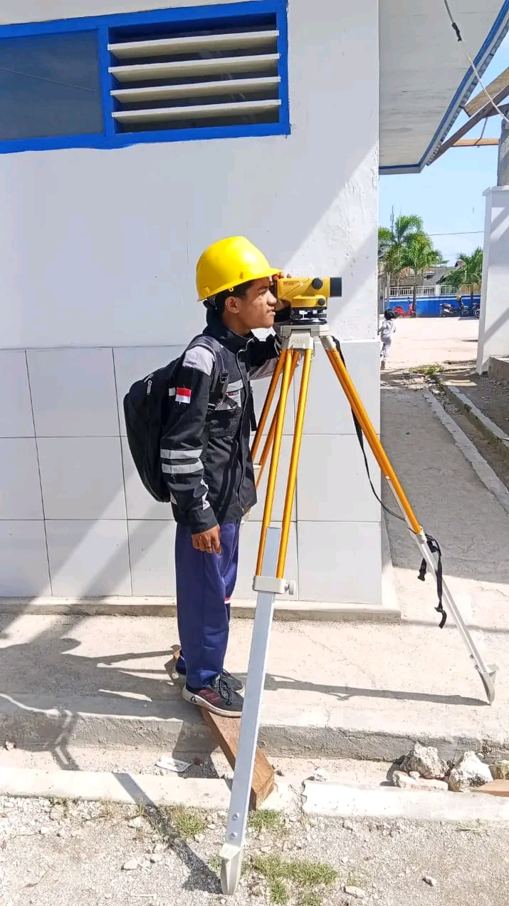
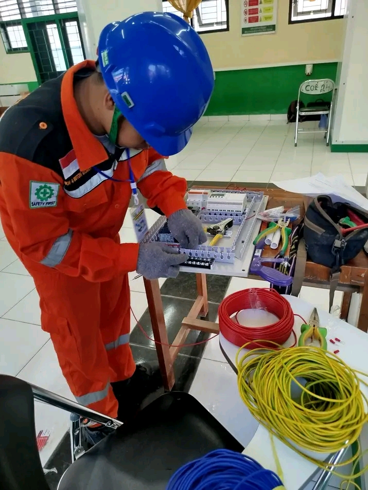
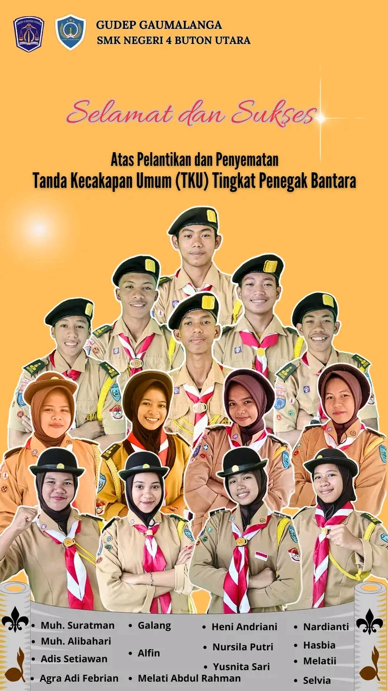

×

Unggul, Berkarakter, dan Berdaya Saing
Mencetak Generasi Unggul di Bidang Teknologi dan Kejuruan
Lihat JurusanTeknik Komputer dan Jaringan
Klik untuk detail →Akuntansi dan Keuangan Lembaga
Klik untuk detail →Teknik Instalasi Tenaga Listrik
Klik untuk detail →Bisnis Konstruksi dan Properti
Klik untuk detail →SMKN 4 BUTON UTARA adalah sekolah menengah kejuruan unggulan yang berlokasi di Kabupaten Buton Utara, Sulawesi Tenggara. Kami berkomitmen untuk menghasilkan lulusan yang kompeten, berkarakter, dan siap bersaing di dunia kerja maupun dunia industri.
"Menjadi sekolah kejuruan unggul yang menghasilkan lulusan beriman, bertakwa, kompeten, dan berdaya saing global."
1. Menyediakan pendidikan vokasi berkualitas sesuai kebutuhan industri.
2. Mengembangkan kurikulum berbasis kompetensi dan teknologi.
3. Membentuk karakter siswa yang disiplin, kreatif, dan inovatif.
4. Menjalin kemitraan dengan dunia usaha dan dunia industri.






Jl. Pendidikan No. 45, Kec. Kulisusu, Kab. Buton Utara, Sulawesi Tenggara 93672
(0402) 1234567
info@smkn4butonutara.sch.id
Senin - Jumat: 07.30 - 15.30 WITA